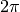

moontrac – Moon Tracker¶
Analysis¶
650-850. The Julian Astronommical Day number is T1.
- 880-950. GMT time of day in T5?
- The time ranges vary with the position of the moon. B and E1 appear to represent this. T is a fraction of a day, T5 is T1 + T, day plus time.
980-1080. Position of the moon at time T5. P5 = .
This involves some scary/confusing math of the following form
Why is the integer part discarded in calculations of K_1 to K_5?
980 K1=((0.751213014125824!+0.036601100116968155!*T5)-INT(0.751213014125824!+0.036601100116968155!*T5))*P5 990 K2=((0.8225129842758179!+0.03629159927368164!*T5)-INT(0.8225129842758179!+0.03629159927368164!*T5))*P5 1000 K3=((0.9957659840583801!+0.002737780101597309!*T5)-INT(0.9957659840583801!+0.002737780101597309!*T5))*P5 1010 K4=((0.9742709994316101!+0.03386320173740387!*T5)-INT(0.9742709994316101!+0.03386320173740387!*T5))*P5 1020 K5=((0.03125249966979027!+0.03674820065498352!*T5)-INT(0.03125249966979027!+0.03674820065498352!*T5))*P5 1030 L8=K1+0.658000111579895!*R5*SIN(2*K4)+6.289000988006592!*R5*SIN(K2) 1040 L8=L8-1.2740000486373901!*R5*SIN(K2-2*K4)-0.1860000044107437!*R5*SIN(K3) 1050 L8=L8+0.21400000154972076!*R5*SIN(2*K2)-0.11400000005960464!*R5*SIN(2*K5) 1060 L8=L8-0.059000011533498764!*R5*SIN(2*K2-2*K4)-0.05700001120567322!*R5*SIN(K2+K3-2*K4) 1070 K6=K5+0.6593000292778015!*R5*SIN(2*K4)+6.230299949645996!*R5*SIN(K2)-1.2719999551773071!*R5*SIN(K2-2*K4) 1080 L7=5.144000053405762!*R5*SIN(K6)-0.1459999978542328!*R5*SIN(K5-2*K4)

1090-1230. Right Ascension and Declination.
1240-1300. Greenwich Hour Angle.
1310. Local Hour Angle.
1320-1370. Elevation
1380-1420. Azimuth
1600-1950. Output
1970-2030. End-of-loop updates of B.
Alternative Approximation¶
http://www.stjarnhimlen.se/comp/ppcomp.html
This page describes a quick approximation that’s often good enough for most purposes.
The primary orbital elements
N = longitude of the ascending node
i = inclination to the ecliptic (plane of the Earth’s orbit)
w = argument of perihelion
a = semi-major axis, or mean distance from Sun
e = eccentricity (0=circle, 0-1=ellipse, 1=parabola)
M = mean anomaly (0 at perihelion; increases uniformly with time)
d is the Julian Astronomical Date of interest.
Orbital Elements for the Moon
N = 125.1228 - 0.0529538083 * d
i = 5.1454
w = 318.0634 + 0.1643573223 * d
a = 60.2666 (Earth radii)
e = 0.054900
M = 115.3654 + 13.0649929509 * d
Orbital Elements for the Sun
N = 0.0
i = 0.0
w = 282.9404 + 4.70935E-5 * d
a = 1.000000 (AU)
e = 0.016709 - 1.151E-9 * d
M = 356.0470 + 0.9856002585 * d
ecl, the obliquity of the ecliptic, i.e. the “tilt” of the Earth’s axis of rotation (currently 23.4 degrees and slowly decreasing). First, compute the “d” of the moment of interest (section 3). Then, compute the obliquity of the ecliptic:
ecl = 23.4393 - 3.563E-7 * d
Position of the Moon
Compute the eccentric anomaly, E, from M, the mean anomaly, and e, the eccentricity.
As a first approximation, do (E and M in radians):
If e, the eccentricity, is less than about 0.05-0.06, this approximation is sufficiently accurate.
If the eccentricity is larger, set
and then use this iteration formula (E and M in radians):
For each new iteration, replace . Iterate until E0 and E1 are sufficiently close together (about 0.001 degrees). For comet orbits with eccentricites close to one, a difference of less than 1E-4 or 1E-5 degrees should be required.
If this iteration formula won’t converge, the eccentricity is probably too close to one. Then you should instead use the formulae for near-parabolic or parabolic orbits.
Now compute the moon’s distance, r, and true anomaly, v:


Position of the Sun
Compute the eccentric anomaly E from the mean anomaly M and from the eccentricity e (E and M in radians):
Note that the formulae for computing E are not exact; however they’re accurate enough here.
Then compute the Sun’s distance, r, and its true anomaly, v, from:
(note that the r computed here is later used as r_s)
atan2() must be used to convert an x,y coordinate pair to the correct angle in all four quadrants.
The Sun’s true longitude:
Convert (lonsun,r) to ecliptic rectangular geocentric coordinates (xs,ys):
(since the Sun always is in the ecliptic plane, zs is of course zero). (xs,ys) is the Sun’s position in a coordinate system in the plane of the ecliptic. To convert this to equatorial, rectangular, geocentric coordinates, compute:
Finally, compute the Sun’s Right Ascension (RA) and Declination (Dec):


Perturbations
All the following terms should be accounted for. If less accuracy is needed, some of the smaller terms can be omitted.
First compute:
Ms, Mm Mean Anomaly of the Sun and the Moon
Nm Longitude of the Moon’s node
ws, wm Argument of perihelion for the Sun and the Moon
Ls = Ms + ws Mean Longitude of the Sun (Ns=0)
Lm = Mm + wm + Nm Mean longitude of the Moon
D = Lm - Ls Mean elongation of the Moon
F = Lm - Nm Argument of latitude for the Moon
Add these terms to the Moon’s longitude (degrees):
-1.274 * sin(Mm - 2*D) (the Evection)
+0.658 * sin(2*D) (the Variation)
-0.186 * sin(Ms) (the Yearly Equation)
-0.059 * sin(2*Mm - 2*D)
-0.057 * sin(Mm - 2*D + Ms)
+0.053 * sin(Mm + 2*D)
+0.046 * sin(2*D - Ms)
+0.041 * sin(Mm - Ms)
-0.035 * sin(D) (the Parallactic Equation)
-0.031 * sin(Mm + Ms)
-0.015 * sin(2*F - 2*D)
+0.011 * sin(Mm - 4*D)
Add these terms to the Moon’s latitude (degrees):
-0.173 * sin(F - 2*D)
-0.055 * sin(Mm - F - 2*D)
-0.046 * sin(Mm + F - 2*D)
+0.033 * sin(F + 2*D)
+0.017 * sin(2*Mm + F)
Add these terms to the Moon’s distance (Earth radii):
-0.58 * cos(Mm - 2*D)
-0.46 * cos(2*D)
Geocentric Coordinates of the Moon

Equatorial Coordinates
Let’s convert our rectangular, ecliptic coordinates to rectangular, equatorial coordinates: simply rotate the y-z-plane by ecl, the angle of the obliquity of the ecliptic:
Finally, compute the moon’s Right Ascension (RA) and Declination (Dec):
Compute the geocentric distance:


Azimuthal coordinates
To find the azimuthal coordinates (azimuth and altitude) we proceed by computing the HA (Hour Angle) of the object. But first we must compute the LST (Local Sidereal Time), which we do as described in 5b above. When we know LST, we can easily compute HA from:
HA is usually given in the interval -12 to +12 hours, or -180 to +180 degrees. If HA is zero, the object can be seen directly to the south. If HA is negative, the object is to the east of south, and if HA is positive, the object is to the west of south. IF your computed HA should fall outside this interval, add or subtract 24 hours (or 360 degrees) until HA falls within this interval.
Now it’s time to convert our objects HA and Decl to local azimuth and altitude. To do that, we also must know lat, our local latitude. Then we proceed as follows:

The Moon’s topocentric position
To compute the topocentric positions, we must add a correction to the geocentric position.
Let’s start by computing the Moon’s parallax, i.e. the apparent size of the (equatorial) radius of the Earth, as seen from the Moon:
where r is the Moon’s distance in Earth radii. It’s simplest to apply the correction in horizontal coordinates (azimuth and altitude): within our accuracy aim of 1-2 arc minutes, no correction need to be applied to the azimuth. One need only apply a correction to the altitude above the horizon:

Alternative Accurate¶
http://www.stargazing.net/kepler/moon3.html
This spreadsheet contains a very detailed calculation for the moon’s position.
Legacy Introduction¶
MOON TRACKER by Lance Collister WA1JXN
edited for HAMCALC by George Murphy VE3ERP
Displays GHA, Declination, Azimuth and Elevation of the moon from a
selected latitude and longitude on a selected date. 'Windows'
between the Western Hemisphere and other parts of the world are
also indicated where appropriate.
Position is calculated at 30 minute intervals during the portions
of the GMT day when the moon is above the local horizon.
Latitude and longitude are computed in decimal degrees. If you wish
to convert degree/minute/second coordinates to decimal degrees, run
the EQUIVALENT VALUES program.
If you are making a printout, select option (1) from the printer
control message bar at the bottom of each screen (i.e., DO NOT
advance paper) if you want a single continuous tabular printout.
(For further information see the 1997 ARRL HANDBOOK for RADIO
AMATEURS, page 23.55).
Legacy Output¶
More or less. There are a number of formatting problems that are not part of HamCalc.
POSITION OF THE MOON on 013/5/9 GMT as seen from 38.0°N 76.0°W
LST = Local Solar Time; ≈y = yesterday; ≈t = tomorrow
GMT GHA DECLIN WINDOW LST AZIMUTH ELEVATION
───────────────────────────────────────────────────────────────────
0000 81.0° 4.6° European 11:00 ≈y 189.0° 55.8°
0000 88.3° 4.5° Americas 11:70 ≈y 201.5° 54.2°
0000 95.5° 4.4° Americas 11:00 ≈y 212.8° 51.4°
0030 102.8° 4.4° Americas 11:70 ≈y 222.7° 47.8°
0000 110.1° 4.3° Americas 11:00 ≈y 231.2° 43.5°
0030 117.4° 4.2° Americas 11:70 ≈y 238.5° 38.7°
0000 124.6° 4.1° Americas 11:00 ≈y 244.9° 33.5°
0030 131.9° 4.0° Americas 11:70 ≈y 250.7° 28.1°
0000 139.2° 3.9° Far East 11:00 ≈y 255.9° 22.5°
0030 146.4° 3.8° Far East 11:70 ≈y 260.7° 16.8°
0000 153.7° 3.7° Far East 11:00 ≈y 265.3° 11.1°
0030 161.0° 3.6° Far East 11:70 ≈y 269.8° 5.3°
0830 349.9° 1.2° 10:70 ≈y 91.4° 2.9°
0900 357.1° 1.1° 10:00 ≈y 96.0° 8.5°
0930 4.4° 1.0° 10:70 ≈y 100.8° 14.1°
0000 11.7° 0.9° 10:00 ≈y 105.7° 19.7°
0030 18.9° 0.8° 10:70 ≈y 111.1° 25.1°
0100 26.2° 0.7° 10:00 ≈y 116.9° 30.3°
0130 33.4° 0.6° 10:70 ≈y 123.3° 35.2°
0200 40.7° 0.5° 10:00 ≈y 130.6° 39.7°
0230 48.0° 0.4° 10:70 ≈y 138.8° 43.8°
0300 55.2° 0.3° European 10:00 ≈y 148.2° 47.1°
0330 62.5° 0.3° European 10:70 ≈y 158.6° 49.7°
0400 69.8° 0.2° European 10:00 ≈y 169.9° 51.1°
───────────────────────────────────────────────────────────────────
Quirks¶
The FOR loop that starts on line 440 ends on line 2030.
Note that line 2020 is a GOTO, preventing 2030 NEXT N from being executed.
Line 940 has 940 IF D8>=0 THEN 2030 which is the only way that the FOR-NEXT loop works. And it only works once, causing a great deal of confusion.